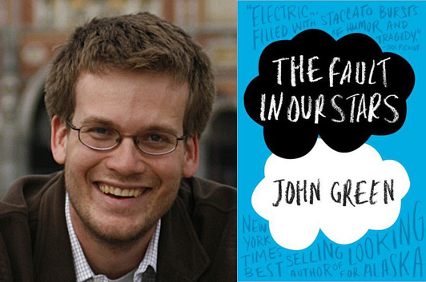

I think by now everyone is at least familiar with JRR Tolkien's Lord of the Rings, even if they have never read his books. I understand the movie was fantastic, however, everyone knows the books are always better. Always. So I don't get people that are satisfied with merely watching the movies; think about how awesome those were. How much better must the original work be!? Mind blowing! I also don't understand people that roll their eyes over Tolkien's descriptive phrases, maybe he does tend to ramble on a bit, but really, that's how he managed to create this entire other universe and create tangible fictional beings! Middle Earth is legendary! Who doesn't know what a Hobbit is? The worst part by far, though, is ignorance of Tom Bombadil. All those people who are fans of Lord of the Rings, watched only the movies, and ignored the books, are missing out on the brilliance of Tom Bombadil. These are the 3 books in the trilogy:
John Green is both an author AND a vlogger! He has this fluency with the English language, where he can just throw words together and somehow the end result is this comprehensive analysis on some random topic, and it's like, how did you do that!? I'm always struggling to pull coherent sentences together, so maybe John Green is just taking more than his fair share of words.
This was John Green's very first publication. It's mostly relatable to teens, and for those of us who have out-grown our teenage years (so old!!) it brings back those memories of what it was like to be in that awkward stage of life. It also touches on coming to terms with our own mortality, so definitely not a light-hearted read if that's what you're going for.
This is John Green's latest work, and my favorite of his books so far. It was partially influenced by his time spent on a children's ward, and also by this lovely girl named Esther who tragically passed away due to cancer. This novel was beautifully written, and without giving away too much, follows the title. You see, Shakespeare's Julius Caesar has a line which reads, "The fault, dear Brutus, is not in our stars but in ourselves, that we are underlings." John Green's book explores this idea, which Green rejects; some things are inevitable, "faults in our stars" so to say, and there is nothing anybody can do to about it. For example, kids dying of cancer.
